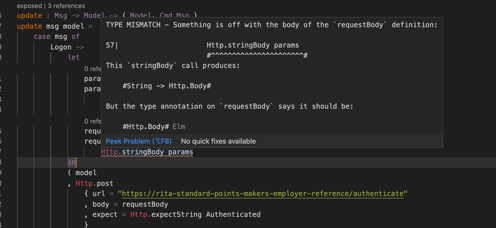
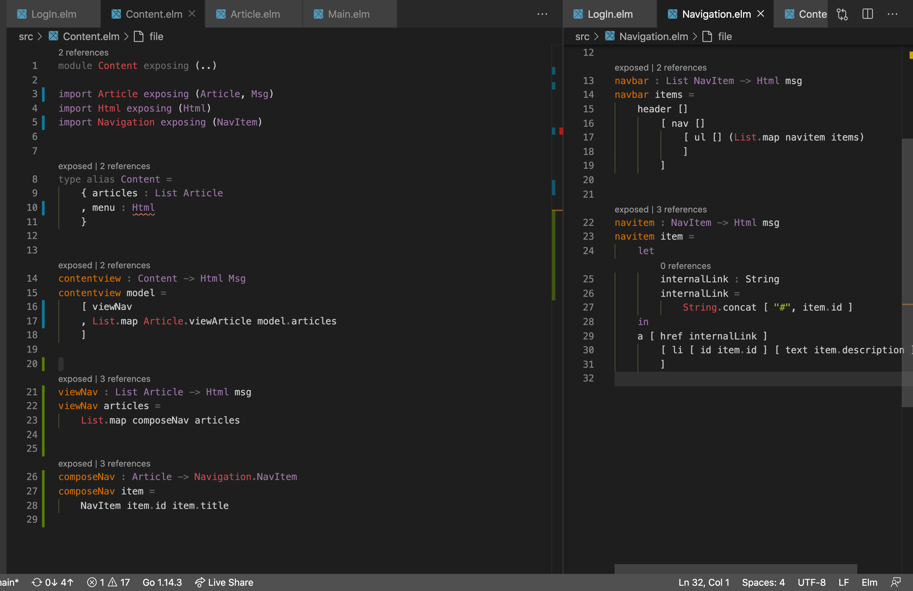

Notes
Writing
- state the purpose of the action before the actual implementation
K8s and Helm
- Helm is used to write K8s controllers
- K8s Controllers creates Pod
- k8s Controllers describe desired state OF WHAT
- Why do I need to know about Pod
- Can't K8s handle everything about Pod via Controllers I wrote
- Is Pod TTL used for Canary/rollout deployment ?
- AWS resources means the things like: S3, EC2, ELB, DynamoDB;
Unlike K8s resources and terraform resources, which are external to K8s and Terraform themselves;
- Helm: where are the previous releases stored
- what is the relation between helm releases and K8s pods
- does the controller live in a pod? is it a pod?
- NOdes and kubelets
- the Helm release statuses, any logs possible?
Terraform
- Terraform describes desired state OF WHAT
MER: Makers Employer Reference App
-
Elm
- which type do I use in Elm: document, element, or application
- Do I compile the app to html or js
- Does it make a new http request everytime someone click on the navbar
- Elm type signature: the whole thing is the type, not the result.
How do I get from point A to point B then?

- Elm vscode plugin error hightlighting don't always work
- how I imagine the program should handle it is not how it turnt out.my mind requires a whole view whereas the whole view ^^^ is in fact the entry point.

- When to use the Browser package in Elm?
-
AWS services
- IAM user and IAM role are different things
- which AWS services do I need to make the app cloud native
- do I start an aws session with each service or is one enough
- the benefits of sharedConfigState enabled -> AWS_SDK_LOAD_CONFIG -> session could load from credentials AND config
- Access key id & secret access key: which is the key, and which the value
- Configure AWS services with UI or code?
-
DynamoDB
- Are database initially created with code? what happened with those code
- dynamodb createTableInput: attributes list include nested attributes? difference between key schema and attribute list?
- create a table of items that are documents; top level namespace in a table is item, so why declare Attribute rather than Item
- is the schema for each item rather than each table
- is the key schema a list of attributes that are primary keys?
-
Lambdas
- Why create a lambda deployment package
- flow: invoke via API/other services -> event sent to function -> run functions
event.APIGatewayProxyRequest: where is the type signature of event- is
APIGatewayProxyRequest defined in API Gateway or Lambda
- What is a proxy resource
- I've been driving with eyes closed all day without a backend to help with testing